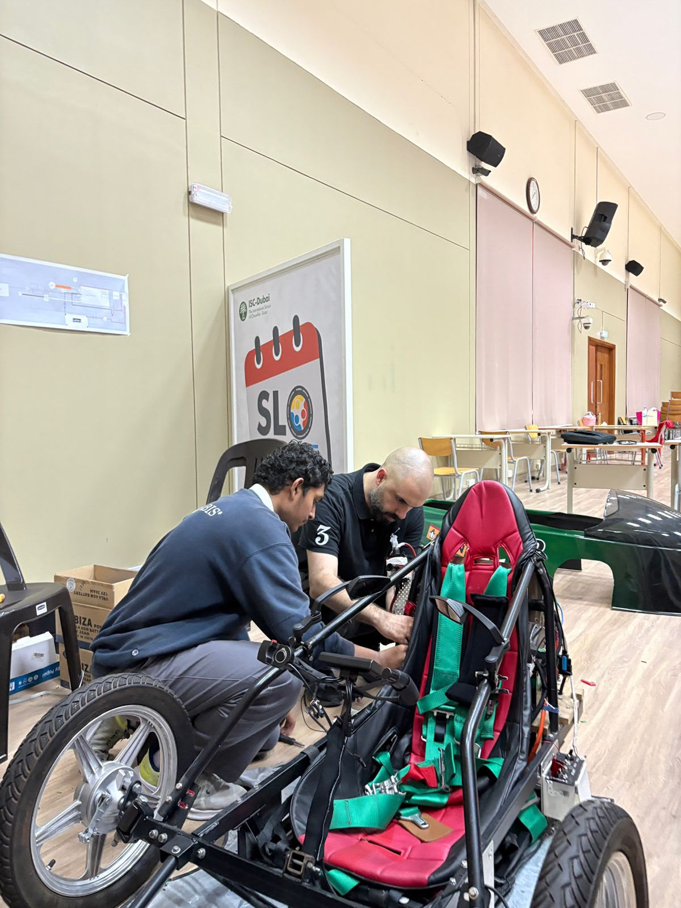
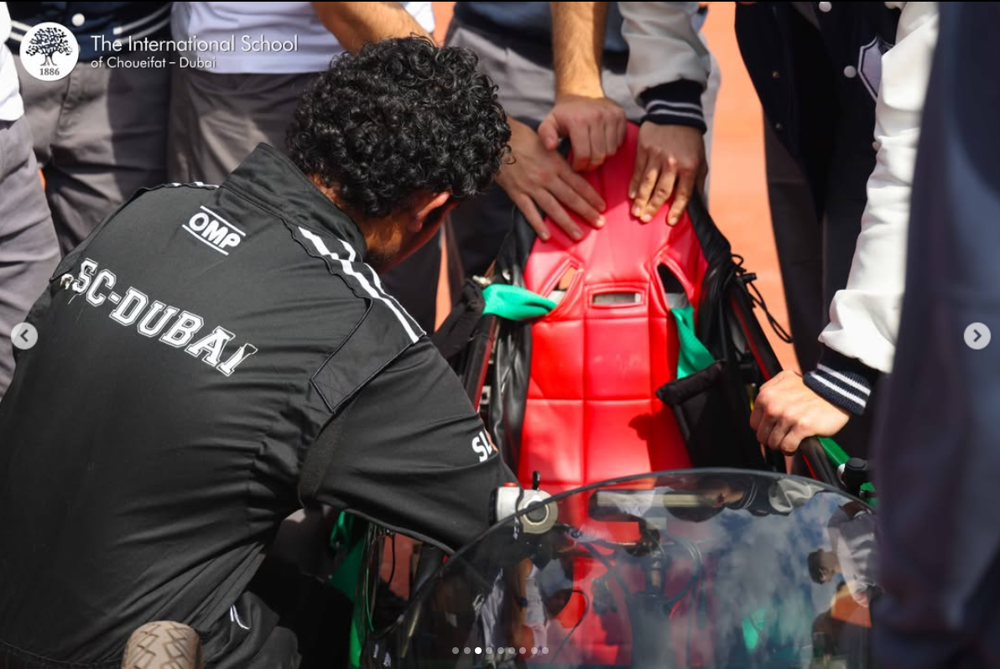
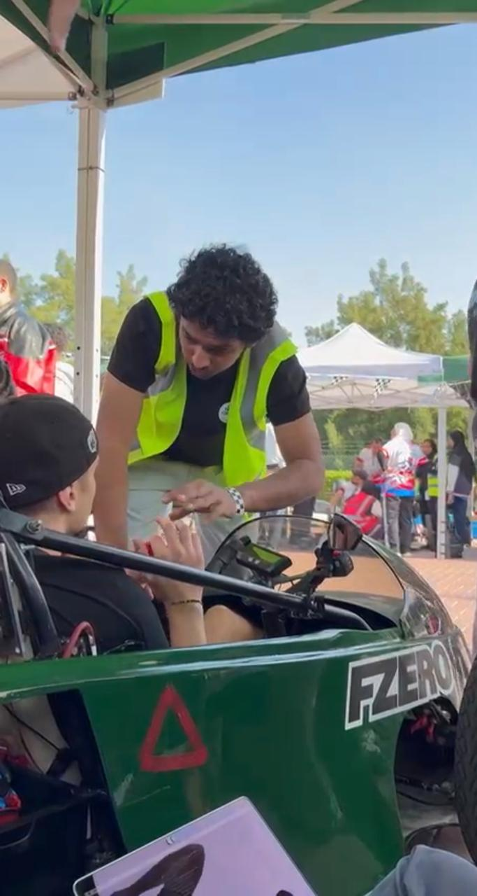

Protection and power path
Traction power runs through an emergency kill switch, a 100 A fuse, contactor and precharge circuit before the motor controller and rear-wheel motor. A Cycle Analyst and shunt monitor the traction supply.
BUILD 02 / ENGINEERING
The 48 V traction system, protection path, battery strategy and fault repairs behind the race car.
Read the case study
I worked on the car’s power and control wiring and diagnosed faults during development. The 48 V traction system uses interchangeable packs of four 12 V / 12 Ah sealed lead-acid batteries in series. A separate 12.8 V / 7 Ah LiFePO4 pack powers low-voltage electronics and telemetry.
Wired, soldered and repaired vehicle electrical and control connections.
Traced a no-power failure to a blown main fuse and verified power after replacement.
Diagnosed and replaced a faulty contactor; repaired throttle and dashboard-control faults.
Proposed a one-pack-per-heat strategy to reduce the mass carried during each heat.
Traction power runs through an emergency kill switch, a 100 A fuse, contactor and precharge circuit before the motor controller and rear-wheel motor. A Cycle Analyst and shunt monitor the traction supply.
A damaged 14-pin connector interrupted the throttle signal. I bypassed the faulty connector, soldered the throttle wires to the correct controller connections and checked throttle response.
The plan is to install one interchangeable pack per heat and swap between heats. This reduces mass carried during each run while keeping both packs available across the competition. The expected efficiency benefit is a design rationale, not a measured race result.
I checked continuity, voltage and the affected function after each repair, then repeated the original fault test before returning to wider vehicle testing.
SYSTEM VIEW
Built and tested
PROJECT EVIDENCE
Photographs, diagrams and certificates from this project. Open an image to see it at full size.




